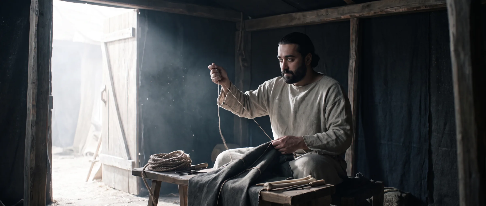
IСын закона
Тарс, Иерусалим · ок. 34 г.
Лучший ученик Гамалиила получает первое поручение от синедриона. Он не бросит ни одного камня в Стефана. Он сделает хуже — он согласится.
Человек, которого избрал Бог
Слепота на дороге, исцеление в Дамаске, цепи в Риме — жизнь Павла стала путём, где испытания не отменяли миссии, а подтверждали её. Двадцать тысяч километров пути, четырнадцать писем, переживших империю, и один подвиг, который он называл добрым. Восемь серий о том, как человек, привыкший карать, научился свидетельствовать.
Поэпизодный план на 8 серий, визуальная библия, палитра и типографика, листы персонажа в двух возрастах, 17 ключевых кадров.
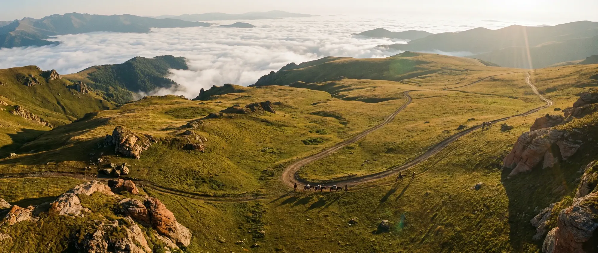
«Савл, Савл, что ты гонишь Меня?» Деян. 9:4
Тарс, Киликия, начало первого века. Сын состоятельного иудея, римский гражданин по рождению, ремесленник по ремеслу: он шьёт грубую парусину и знает Закон наизусть. В Иерусалиме, у ног Гамалиила, он становится лучшим учеником лучшей школы — и самым непримиримым. Когда толпа побивает камнями Стефана, он сторожит одежды свидетелей и не отводит глаз.
Ему дают грамоты на арест последователей новой секты в Дамаске. Восемь дней пути. На середине дороги свет сбивает его с ног, и три дня он не видит ничего. За ним приходит человек, которого он ехал арестовать.
Дальше — тридцать пять лет дороги. Его не принимают ни свои, ни чужие. Он спорит с Петром, ссорится с Варнавой, зарабатывает на жизнь руками, чтобы никого не обременять. Он говорит с философами в Афинах, поднимает мятеж ремесленников в Ефесе, тонет у Мелита и добирается до Рима под конвоем.
В 67 году, в римской камере, где горит одна лампа, он пишет последнее письмо. Сериал заканчивается пустой дорогой на рассвете. Казни в кадре нет.
Мы не снимаем житие. Мы снимаем биографию человека, который был неправ, узнал об этом в одну секунду и потратил остаток жизни на то, чтобы это исправить. Такая история работает независимо от того, верит зритель или нет.

IЛучший ученик Гамалиила получает первое поручение от синедриона. Он не бросит ни одного камня в Стефана. Он сделает хуже — он согласится.
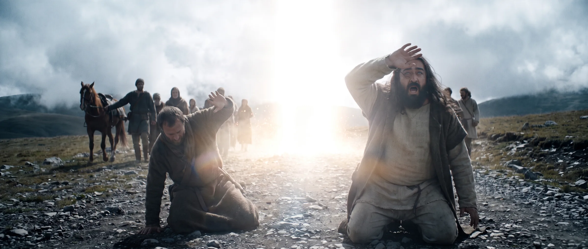
IIВосемь дней пути с грамотами на арест. На середине дороги — свет. Три дня темноты в чужом доме, и человек, которого он ехал взять под стражу, приходит к нему сам.
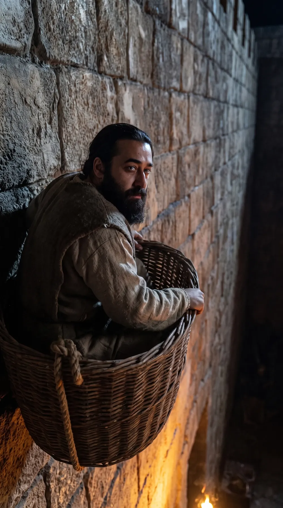
IIIИудеи считают его предателем, христиане — провокатором. Побег из города в корзине по стене. Первая община, где слово «христианин» произносят вслух.
Первое путешествие и первый раскол: должен ли грек становиться иудеем, чтобы стать христианином. Спор с Петром лицом к лицу. Апостольский собор.
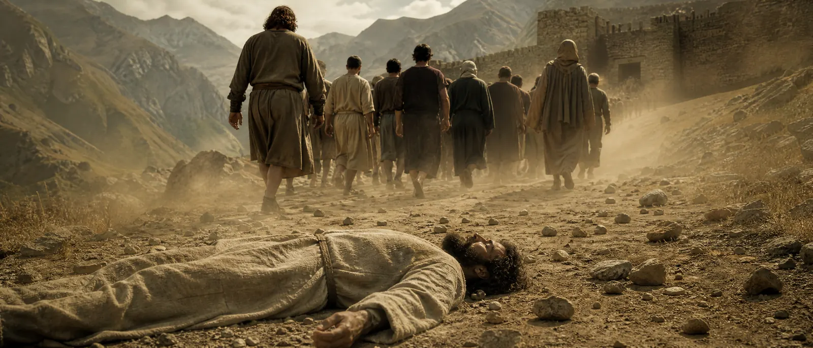
VПавла побивает камнями обезумевшая толпа. Он падает, окровавленный, избитый, безжизненный. Камни продолжают сыпаться на его неподвижное тело. Толпа расходится, оставляя его умирать.
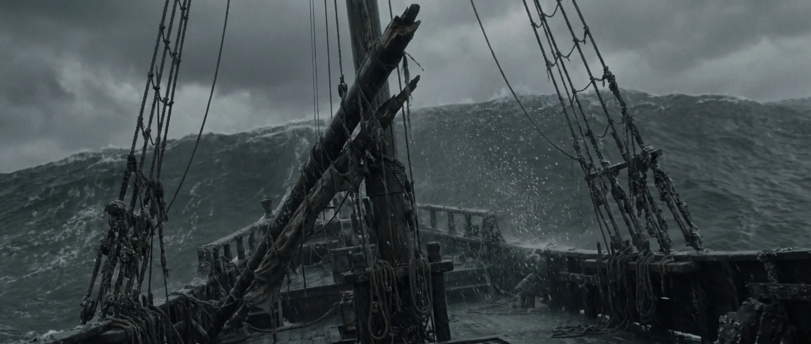
VIАрест в храме, два года заключения без приговора, апелляция к кесарю как римского гражданина. И четырнадцать суток бури, после которых — берег Мелита и двести семьдесят шесть выживших.
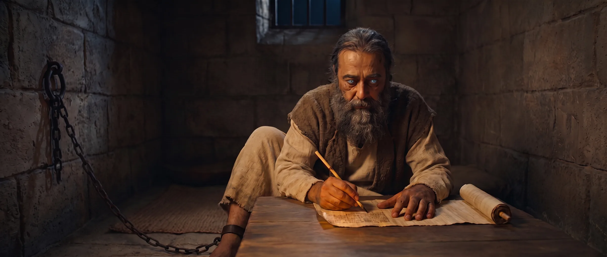
VIIСъёмная квартира под стражей, потом камера. Пожар, гонения, суд. Последние письма Тимофею.
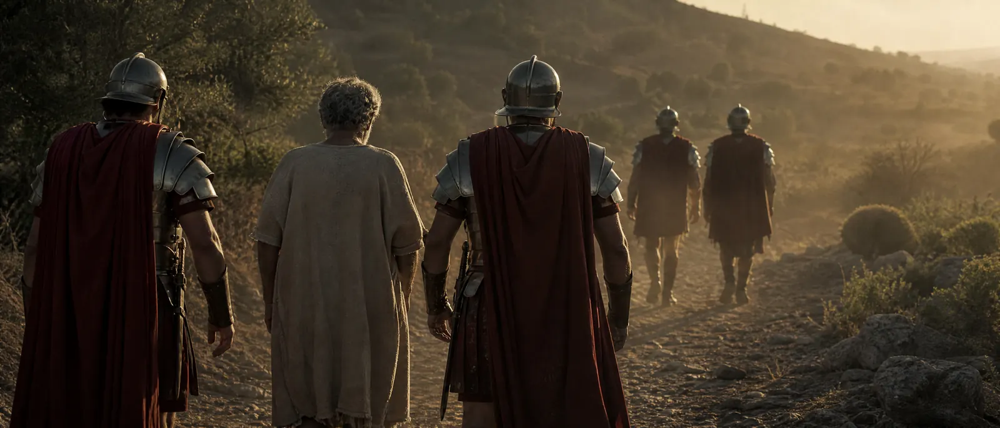
VIIIРаннее утро. По пыльной дороге среди холмов и редких олив движется небольшая процессия: впереди римские воины, за ними Павел. Рук ему не связывают — он римский гражданин, оковы ему не полагаются, но два стражника держатся вплотную. Дорога выводит на каменистую площадку у подножия холма, где уже всё готово. Палач молча проверяет остриё. Он не смотрит на апостола: привычная работа, которую нужно исполнить без суеты.
До Дамаска мир на экране холодный: базальт, пепел, дорожная пыль, ни одного тёплого источника света. После вспышки та же натура, те же люди и та же камера — но золото, лён и олива. Ничего не объясняется репликами. Зритель просто чувствует, что мир сменил температуру.
Прокрутите блок ниже: это не видео, а сам сайт — он переключает палитру вместе с сериалом и дальше остаётся тёплым до конца страницы.
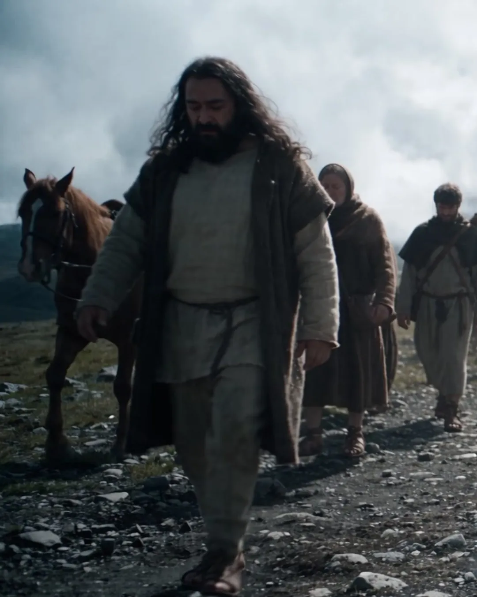
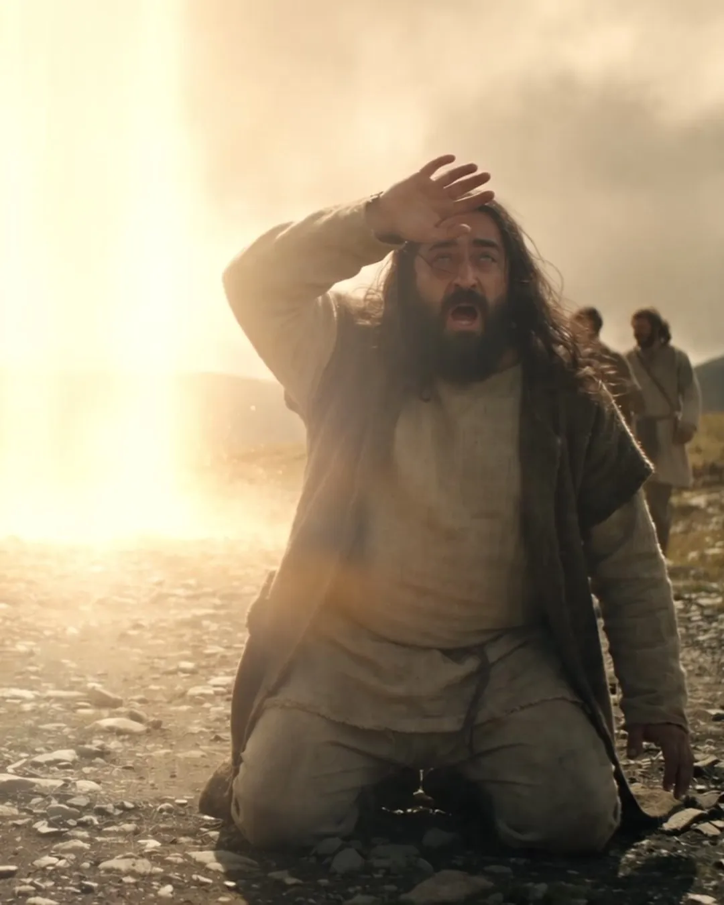
Холодная десатурация, туман, естественный свет. Кирпичный — единственный акцент, не чаще двух раз за серию.
Низкое солнце, пыль в лучах, тёплая ночь. Свет здесь действующее лицо: точка на горизонте, вспышка на дороге, лампа в римской камере.
На роль утверждён конкретный актёр. Левантийский тип, около сорока: тяжёлые тёмные брови, глубоко посаженные глаза, крупный прямой нос, плотное телосложение. И светло-голубая радужка — единственный холодный цвет на тёплом лице, который работает как визуальная подпись героя.
История охватывает тридцать пять лет, поэтому разработаны два возрастных листа: Савл в Тарсе — тридцатилетний, жёстче лицом, борода короче; Павел в Риме — под семьдесят, седина, запавшие щёки. Между ними зритель должен узнавать одного и того же человека.
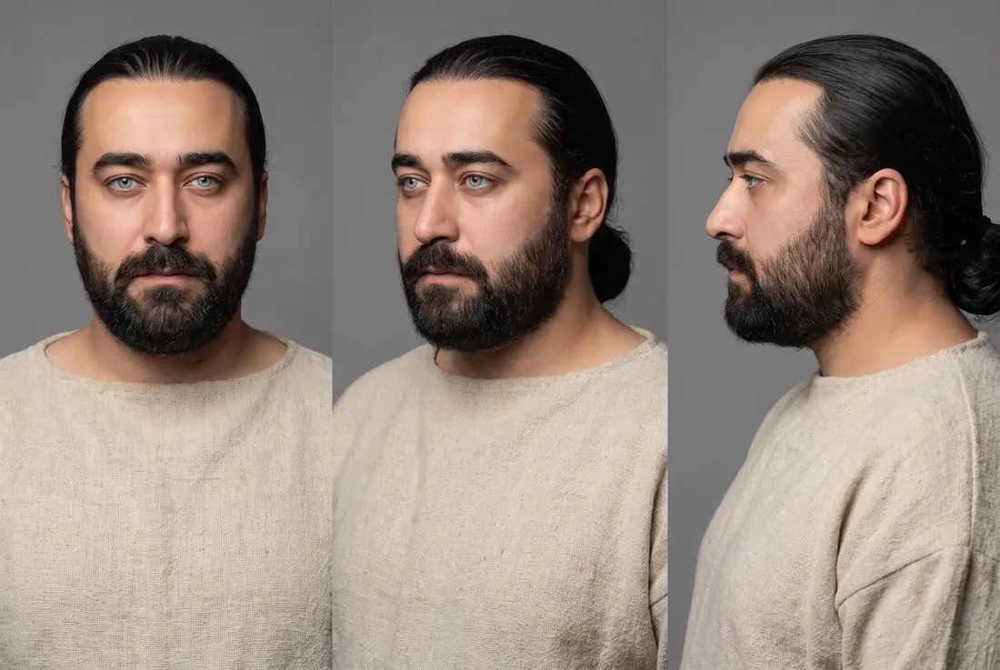
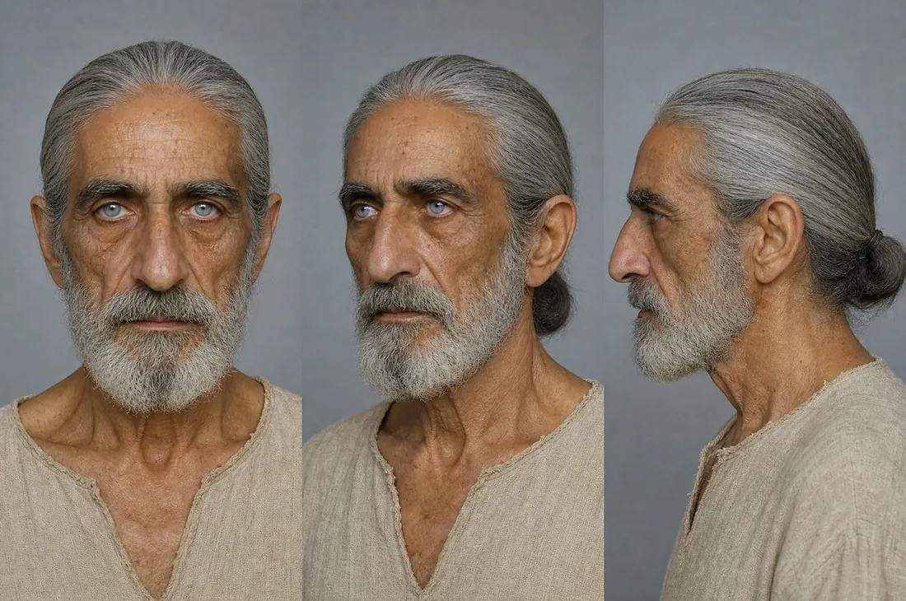
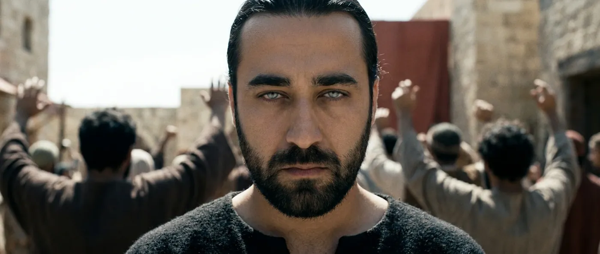
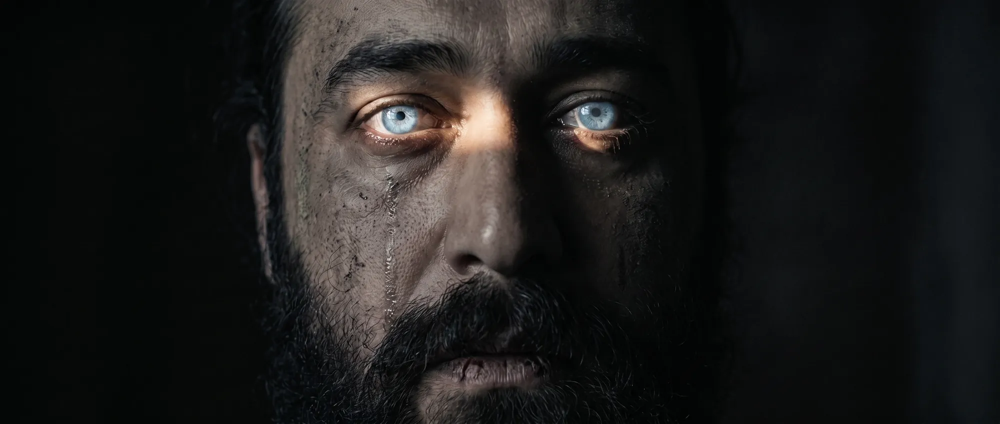
Учитель. Мудрый фарисей, который советует синедриону не трогать новую секту — и чей лучший ученик поступает ровно наоборот.
Первый мученик. Гибнет в первой серии и остаётся в голове героя до последней. Единственный, чьё лицо Павел вспоминает в темноте.
Тот, кто приходит к слепому гонителю в чужом доме. Знает, кто перед ним, и всё равно кладёт руку на голову.
Единственный, кто поручился за него перед общиной. Друг, соратник — и человек, с которым он в итоге расстанется из-за спора.
Спутник второго путешествия. С ним они поют в филиппийской темнице, когда начинается землетрясение.
Врач и летописец. Тот, чьими глазами мы, по сути, всё это и видим. Остаётся с ним до конца, в римской камере.
Ученик, почти сын. Ему адресованы последние два письма — и просьба принести плащ, оставленный в Троаде.
Не злодей с трона, а бюрократическая машина, для которой дело Павла — рядовая папка. Так страшнее.
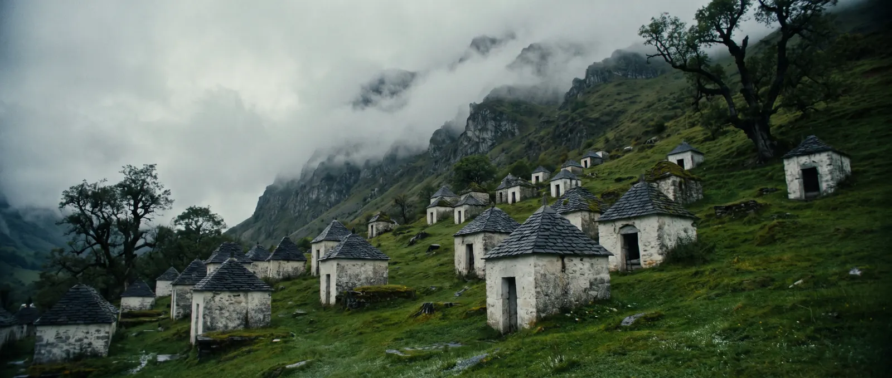
Мы сознательно не ищем «Ближний Восток». Даргавс, Кисловодск и окрестности дают тёмный камень, альпийский луг, ущелья и низкое облако — фактуру, которой нет ни у одного зарубежного аналога. Это решение одновременно удешевляет производство и даёт картине собственное лицо.
Весь визуальный материал проекта с самого начала генерировался под Кавказ, а не под Палестину, — чтобы промо совпало с тем, что реально будет снято.
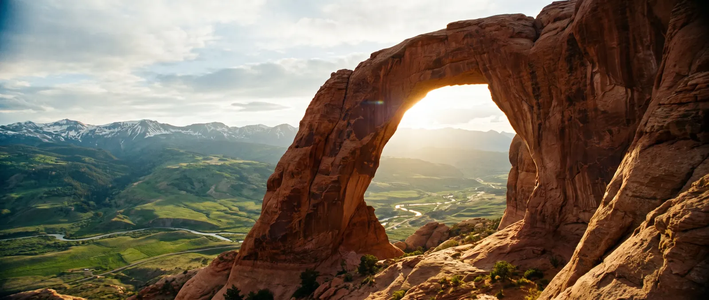
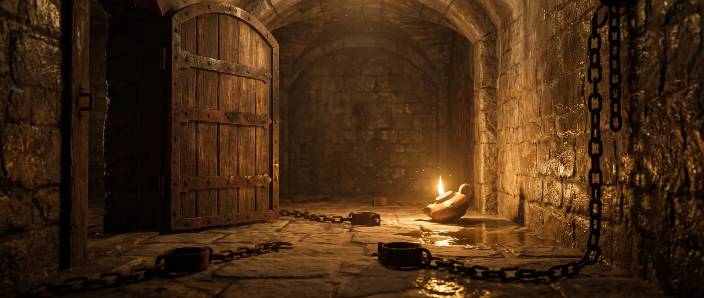
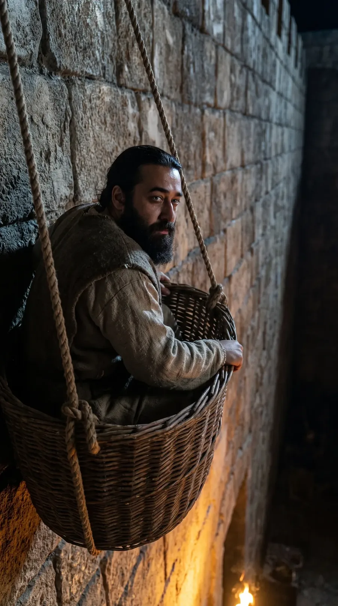
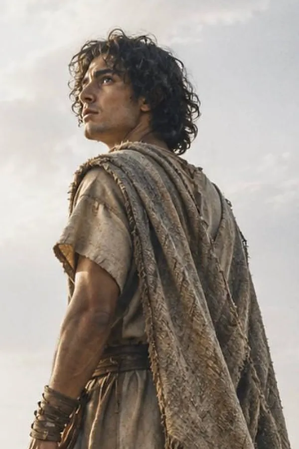
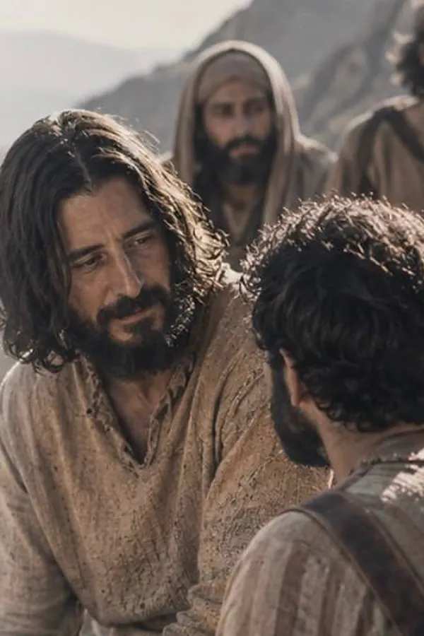
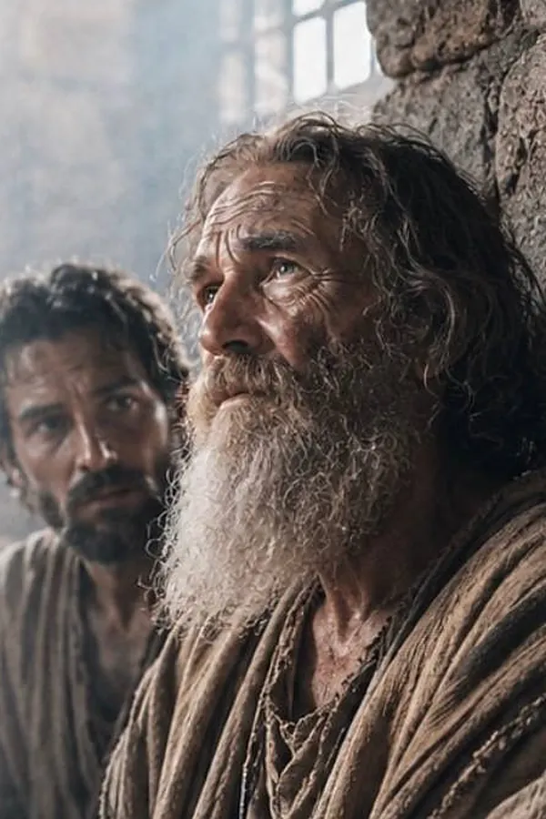
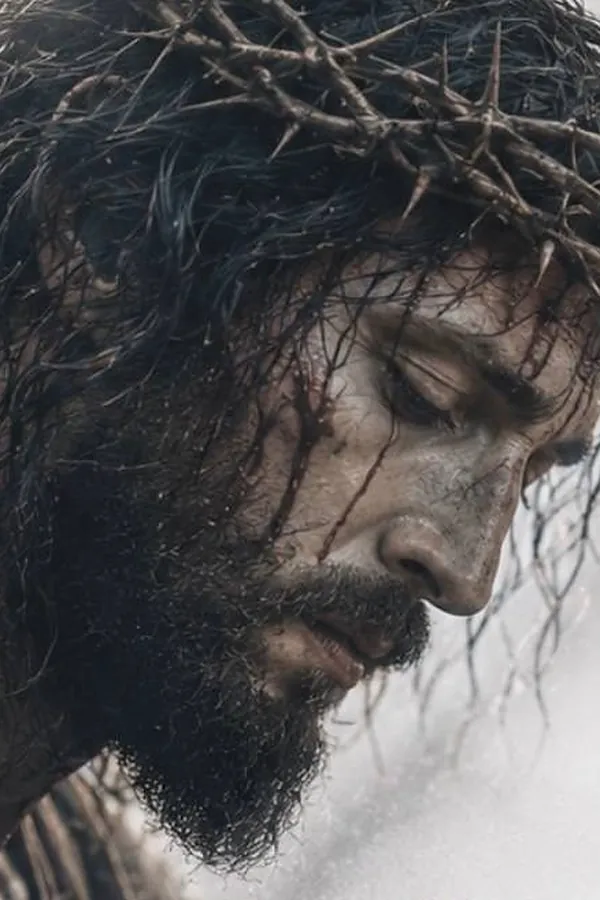
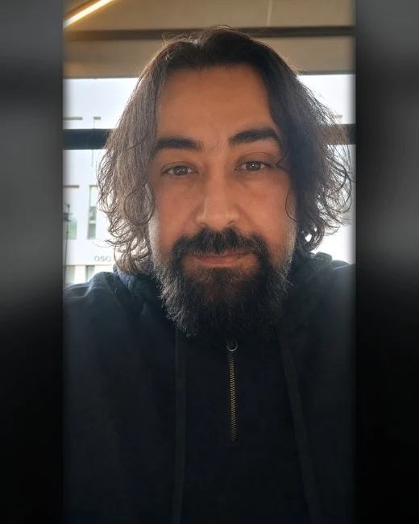
Серафим Бит-ХарибиСамое страшное — решить, что подниматься уже бессмысленно.
Неважно, кто ты. Веришь ты или нет. Падал ты один раз или падал столько, что уже перестал считать. В жизни бывает всякое: ошибки, за которые стыдно, поступки, которые уже не вернуть, люди, которых ранил, и моменты, когда сам понимаешь — виноват…
Павел был таким человеком: он гнал христиан, причинял им зло и был уверен, что поступает правильно. Но однажды всё изменилось. Нет, не его прошлое, конечно, — прошлое останется уже навсегда вместе с ним. Но изменился он сам.
И именно об этом хочется сказать в сериале. Не о человеке без ошибок, а о человеке, который понял в какой-то момент, что идёт не туда, и нашёл в себе силы. Нашёл в себе силы увидеть эту правду, и принять эту правду, и идти по этой правде.
Потому что самое страшное в нашей жизни — не упасть. Самое страшное — это решить, что подниматься уже бессмысленно. А если всё-таки можно? А если даже после всего сделанного можно изменить свою жизнь, если прошлое не обязано стать нашим будущим?..
Именно об этом история Павла.
Я думаю, что он нужен каждому из нас, что каждый из нас может заглянуть глубоко в себя, что каждый может понять: не всё потеряно, что каждый может понять, что он не одинок. Я надеюсь, что, когда сериал выйдет, история Павла коснётся сердец каждого — как верующего, так и атеиста. Поэтому для меня очень важно, чтобы проект реализовался.
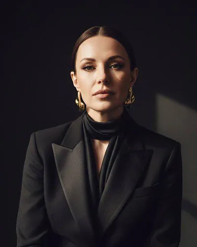
Светлана Кобракова Генеральный продюсерЕсли Бог нашёл Савла на дороге, значит, никто не заперт в своей собственной истории навсегда.
Я делаю этот проект, потому что сегодня особенно важно показать, как человек может пройти сквозь собственную правоту и выйти с другой стороны — не сломленным, а преображённым. Павел не был «идеальным с рождения»: он гнал, судил, верил в свою миссию — и вдруг оказался повержен светом, который не просил.
В мире, где так легко делить людей на «своих» и «чужих», Павел напоминает: миссия не в том, чтобы уничтожать несогласных, а в том, чтобы нести свет туда, где его боятся. Он говорил и иудеям, и эллинам, свободным и рабам — и искал общий язык, а не повод для вражды. Это урок диалога, который сегодня звучит особенно остро.
И ещё это просто великая история пути и подвига. Мне хочется, чтобы зритель увидел: подвиг — это не только громкие победы. Подвиг — это когда ты до конца остаёшься верен тому, что считаешь истиной, даже если весь мир против. И когда ты оставляешь после себя не имя, а великие смыслы и закон.
Этот сериал — не проповедь. Это портрет человека, который прошёл через всё и не потерял голос. И я верю, что сегодня миру нужен именно такой рассказ: о стойкости, о способности меняться, о цене слова и о том, как один упрямый, страстный, ироничный и сомневающийся человек может изменить ход истории.
Black Cobra Production